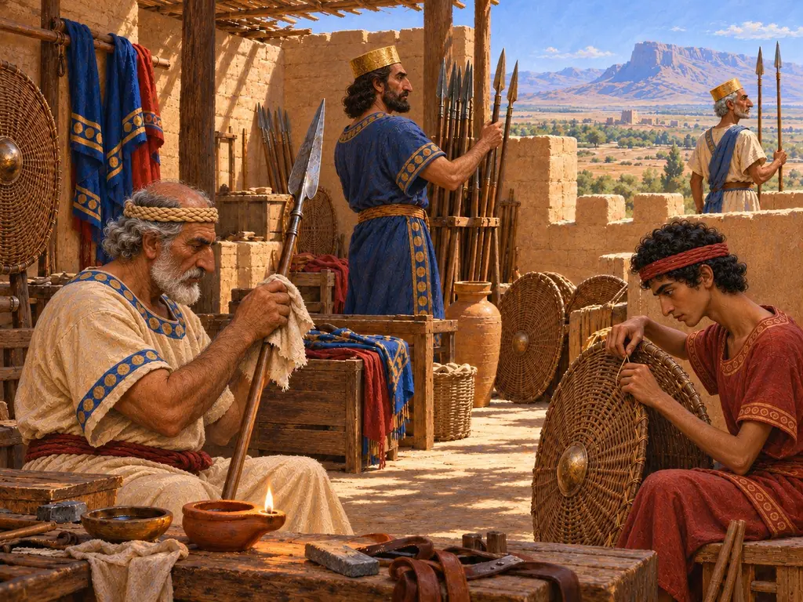
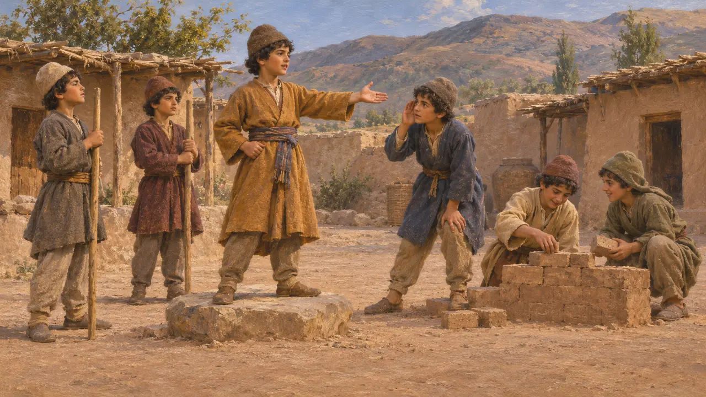
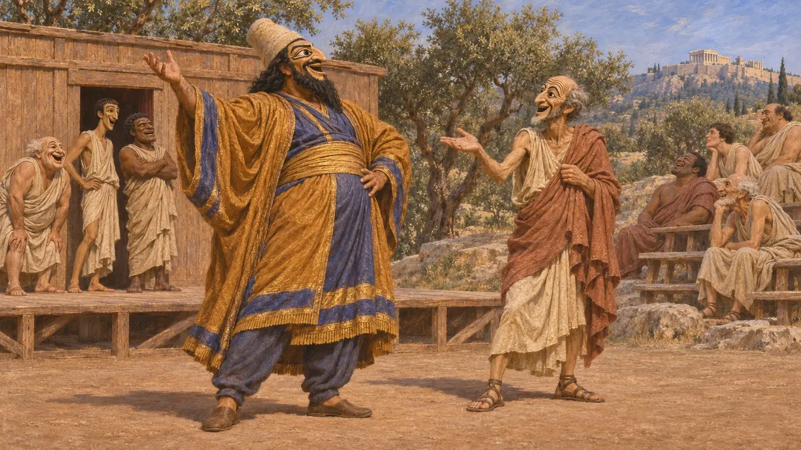
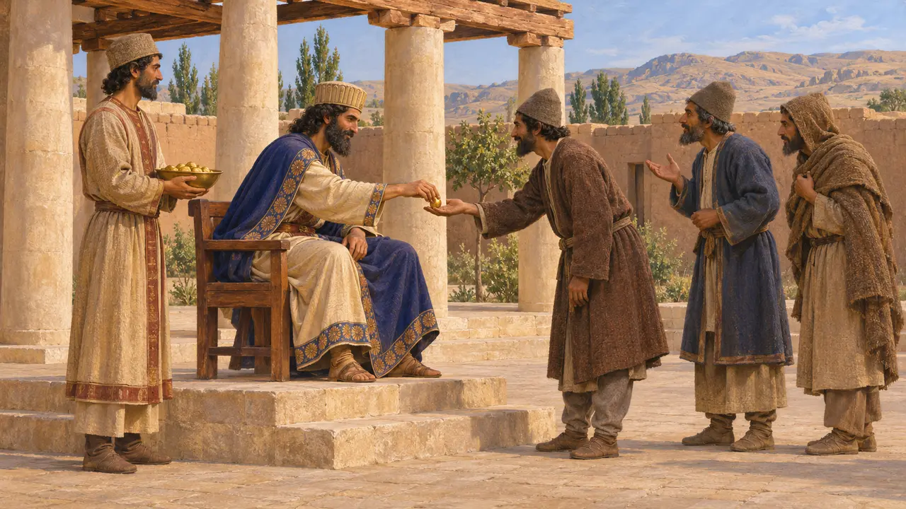
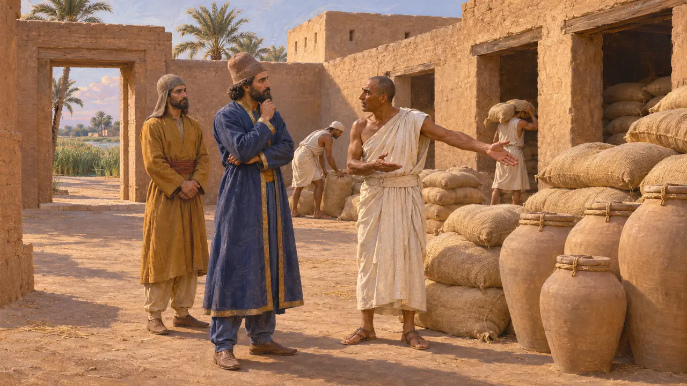

The King's Eye
A royal inspector or informant named by Greek writers, Achaemenid empire, 6th-5th c. BCE
Greek writers describe a Persian official called the King's Eye, a trusted man who watched the provinces and reported to the King. No Persian inscription or tablet yet found names such a post, so the office is known mainly through Greek eyes. It matters because it shows how a vast empire was imagined to keep its governors honest, and how hard it is to separate a real title from a foreign figure of speech.
In the game: The game shows the office as a building, the House of the King's Eye. No such building is known from any site or text; if the post existed, it was a person acting with royal authority, not a fixed house in a city.

The boy who played at being king
Ancient accountHerodotus tells how the young Cyrus, raised as a herdsman's son, was chosen king by other boys in a village game. He gave his playmates roles, making some builders and guards and one the King's Eye. The story implies that Herodotus took the Eye to be a known court post. Earlier he also says that the Median king Deioces kept spies and listeners throughout his land.
Herodotus 1.114; Herodotus 1.100

The Eye on the Athenian stage
Ancient accountIn Aeschylus's Persians, staged in 472, the chorus asks the defeated Xerxes about a noble it calls his faithful Eye, one of the men lost in the war. In 425 Aristophanes brought a comic Persian official, Pseudartabas, onto the stage in the Acharnians and called him the King's Eye. Athenian audiences clearly knew the phrase, though both poets used it for their own dramatic ends.
Aeschylus, Persians; Aristophanes, Acharnians 91-92

Xenophon's eyes and ears of the King
Ancient accountXenophon, writing in the 4th century, says the Persian King was thought to have many eyes and many ears. In his account these were not one officer but all the people who were rewarded for bringing the King useful news. He credits Cyrus with creating this habit through generous gifts, which makes it a moral lesson about royal liberality as much as a description of government.
Xenophon, Cyropaedia 8.2.10-12

A real office or a Greek idea
DisputedThe Old Persian, Elamite and Babylonian records published so far give no title meaning King's Eye. Some scholars link the Greek phrase to Persian terms for listeners that appear as loanwords in Aramaic texts from Egypt. Others, notably Hirsch and Briant, doubt that a single spy service existed and think Greek writers turned royal watchfulness into a fixed office. The King did send trusted men on missions, but their titles remain unclear.
S. W. Hirsch, The Friendship of the Barbarians, 1985; P. Briant, From Cyrus to Alexander, 2002
Sources
- Herodotus, Histories 1.100, 1.114
- Xenophon, Cyropaedia 8.2.10-12
- Aeschylus, Persians
- Aristophanes, Acharnians 91-92
- P. Briant, From Cyrus to Alexander, 2002
- S. W. Hirsch, The Friendship of the Barbarians, 1985